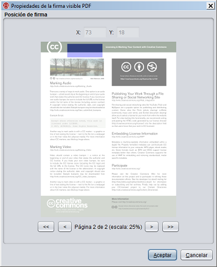

Firmas visibles PDF
Al habilitar la creación de firmas visibles PDF en el Menún de
preferencias de la aplicación, se dará al usuario la posibilidad de seleccionar un área
de firma cada vez que se realice una firma PDF.

Este menu permite utilizar el ratón para seleccionar un área rectanguar de una de las páginas del
PDF.
- X: Número de pixeles en el eje X en la que se encuentra el cursor del ratón con respecto a la imagen
escalada de la página del PDF.
- Y: Número de pixeles en el eje Y en la que se encuentra el cursor del ratón con respecto a la imagen
escalada de la página del PDF.
- (Previsualización de la página del PDF): El usuario debe hacer clic sostenido y arrastrar
el ratón sobre este área para seleccionar el área visible de firma.
- <<: Botón para desplazar la visualización a la primera página del PDF.
- <: Botón para desplazar la visualización a la página anterior del PDF. Puede
reproducirse este comportamiento pulsando la tecla "cursor izquierdo" de su teclado.
- >: Botón para desplazar la visualización a la siguiente página del PDF. Puede
reproducirse este comportamiento pulsando la tecla "cursor derecho" de su teclado.
- >>: Botón para desplazar la visualización a la última página del PDF.
El área de firma desaparecera al cambiar de pantalla del PDF. Seleccione el áre para la firma visible
del PDF y a continuación, pulse el botón "Aceptar".
Si no se desea agregar una firma visible al PDF en cuestión, pulse el botón "Cancelar" o cierre
la ventana para continuar con el proceso normal y firmar el PDF sin agregar un área visible de firma.